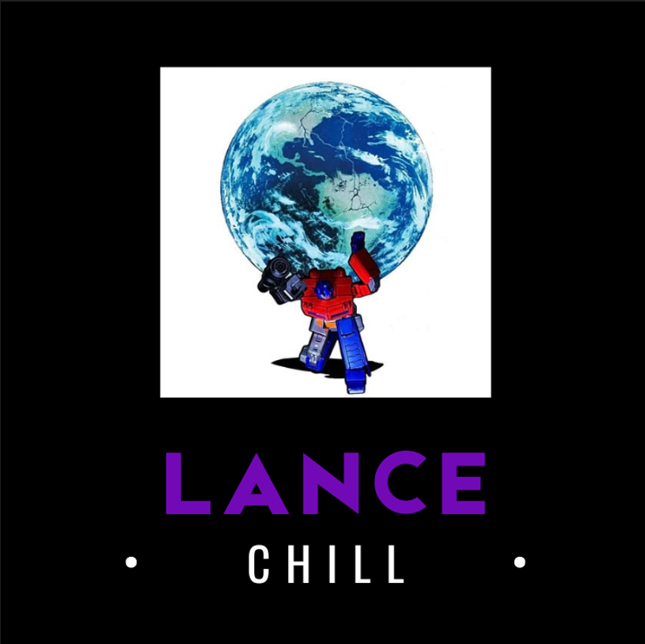

LittleBotsBigplanet started from a simple idea: taking detailed, small-scale Transformers and collectible figures out of display cases and photographing them in real-world outdoor environments—parks, moss trails, concrete overpasses, and city skylines—to make them look towering and alive.
My real name is Shane, though I also go by Lance—either works! I am a Computer Information Systems major in my second-to-last semester, balancing web development, JavaScript programming, and Linux coursework with outdoor toy photography around New York.
Photography Setup: Shot outdoors using natural golden-hour light, low-angle forced perspective, and portable carrying gear to keep accessories organized in the field.
Web Development Stack: Built from scratch with semantic HTML5, responsive CSS3 (featuring custom Autobot/Decepticon theme switching), and vanilla JavaScript DOM applications.